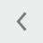

Acceso y navegación
Para ingresar al menú presione la tecla
Por defecto aparecerá:
- USUARIO: Supervisor
- CONTRASEÑA: 1234 (código de seguridad de fábrica)
En la pantalla de menú presione la opción a la que desea ingresar. Para salir presione la tecla
| Permite navegar por el MENU. | |
| Permite salir del nivel del MENU seleccionado, o rechazar una acción. |
Al acceder a cualquier de las opciones disponibles dentro del menú, encontrará en el margen superior una barra de navegación
 | Elimina el registro seleccionado |
| Posiblita acceder al primer registro | |
|  | Permite retroceder |
 | Permite avanzar |
 | Posiblita acceder al último registro |
| Actualiza la información ingresada | |
| Realiza la búsqueda de un artículo por código o por nombre. | |
| Genera un nuevo registro | |
| Registra los datos ingresados | |
 | Cierra el área de trabajo |